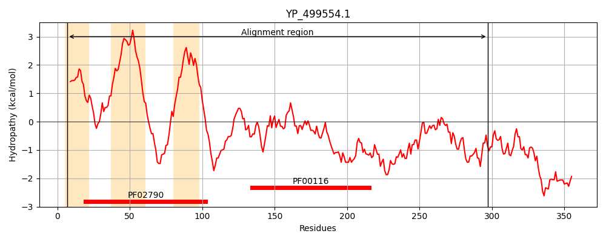
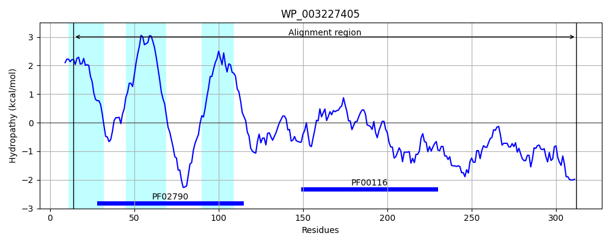
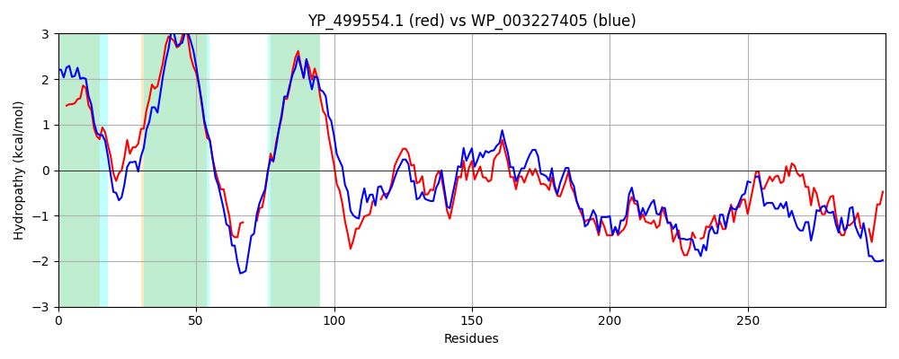

Hit Accession: WP_003227405
Hit TCID: 3.D.4.5.2
Hit Description: gnl|BL_ORD_ID|20726 gnl|TC-DB|WP_003227405|3.D.4.5.2 cytochrome aa3 quinol oxidase subunit II [Bacillus subtilis]
Mach Len: 300
e:0.000000
Query TMS Count : 3
Hit TMS Count: 3
TMS-Overlap Score: 2.900000
Predicted Substrates:CHEBI:5584;hydron
BLAST Alignment:
Score: 687 , Bit scores: 269 bits, E-value: 1.7e-88, Alignment length: 300, Percentage identity: 46
Query: 7 LLLLFGTLILLSGCSNIEIFNAKGPVASSQKFLILYSIVFMLVICFVVLGMFAIFIYKYSYNKNAESG----KMHHNAIIETIWFVIPIIIVAALAIPTVKTLYDYEKPPKSEKD--PMVVYAVSAGYKWFFAYPDEHIETVNTLTIPKDRPVVFKLQAMDTMTSFWIPQLGGQKYAMTGMTMNWTLEASQTGTFRGRNSNFNGEGFSRQTFKVNAVSQKDYDKWVKEVKGK-KTLDQDTFDKQLLPSTPNKALEFNGTHMAFVDPAADPEYIFYAYKRFNFELKDPNFTSE--ENMFKD 297
+L L + +L GCSN + + KGPVA Q LIL SI FML I VV +F I + KY K ++G ++H N +E +W VIPI+IV AL++PTV+T+Y EK P++ KD P+VVYA S +KW F+YP++ IETVN L IP DRP++FK+ + D+M S WIPQLGGQKYAM GM M+ L+A + GT+ GRN+NF GE F+ Q F VNAV++KD++ WVK+ + + L ++ +D+ +LP ++ L F+ TH+ +VD D EY A KR ++ P+ ++ EN+ K+
Sbjct: 14 VLALLTVVFVLGGCSNASVLDPKGPVAEQQSDLILLSIGFMLFIVGVVFVLFTIILVKYRDRKGKDNGSYNPEIHGNTFLEVVWTVIPILIVIALSVPTVQTIYSLEKAPEATKDKEPLVVYATSVDWKWVFSYPEQDIETVNYLNIPVDRPILFKISSADSMASLWIPQLGGQKYAMAGMLMDQYLQADKVGTYEGRNANFTGEHFADQEFDVNAVTEKDFNSWVKKTQNEAPKLTKEKYDELMLPENVDE-LTFSSTHLKYVDHGQDAEYAMEARKRLGYQAVSPHSKTDPFENVKKN 312 | Protein Hydropathy Plots: |
|---|
|  |  |
Pairwise Alignment-Hydropathy Plot:
|
|---|
|  |